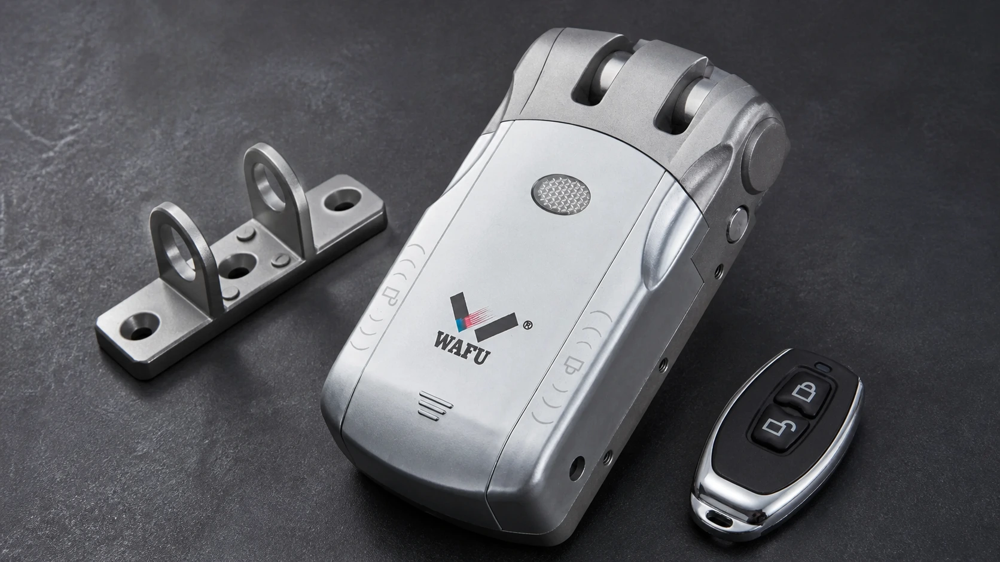
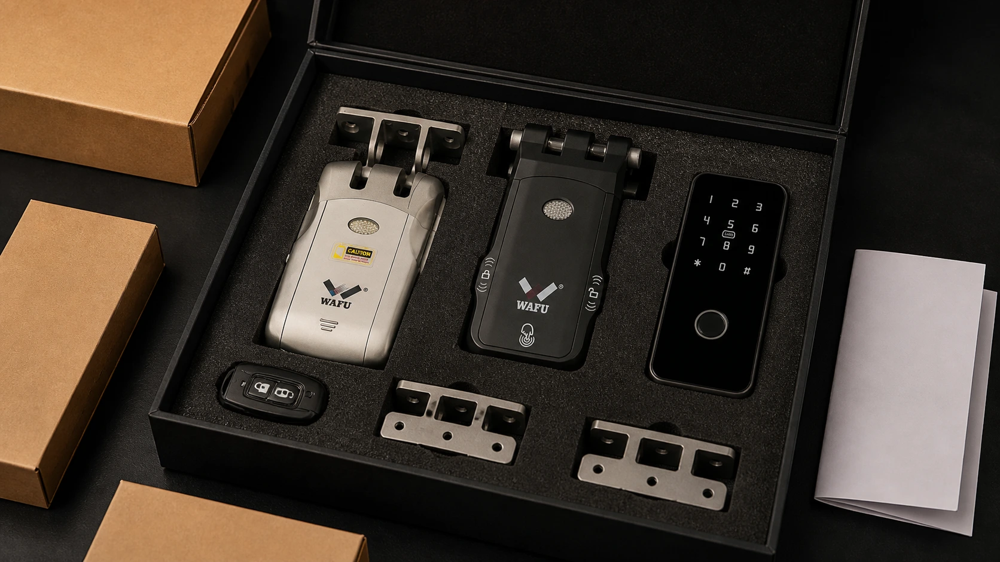

渠道首单最常见的失误，不是型号没选对，而是样品、包装、安装支持和售后安排都留到了货到之后。经销商的第一批货需要帮助销售团队完成展示、试装和交付，而不是把仓库塞满难以说明差异的 SKU。先把首单的任务说清，数量和配置才有依据。
一、首单不是建全产品线
经销商第一次采购隐形智能锁，真正需要验证的是三件事：目标市场是否认可这种门面方案，安装伙伴能否稳定交付，以及团队能否讲清产品之间的差异。若首单一开始就追求型号齐全，仓库里很容易出现功能相近、销售却无法解释定位的货；样品和资料不足时，销售人员也只能把产品当成普通遥控锁来卖。
更实用的做法是给每个首单 SKU 分配任务：有的用来打开价格敏感的咨询，有的承担隐形外观展示，有的用来承接对结构和安全更关注的客户。首单的规模、MOQ、包装和补货安排应在合同中明确，而不是凭经验套用其他项目的数据。

二、先确认目标市场和交付方式
同样是“卖给住宅客户”，渠道模式可能完全不同：有的经销商通过锁匠和安装商交付，有的面对装修公司，有的做线上获客再由当地服务商安装。不同模式决定首单要带多少演示样品、是否需要安装培训、说明书采用何种语言，以及谁负责接收第一轮故障反馈。
| 渠道模式 | 首单应优先准备 | 容易忽略的风险 |
|---|---|---|
| 本地安装商 / 锁匠网络 | 典型门样品、安装资料、配件和异常反馈路径。 | 不同门型没有试装，现场临时改孔。 |
| 装修与项目渠道 | 门型资料、样品确认记录、项目包装与交接清单。 | 销售承诺先于工程核验。 |
| 零售和线上获客 | 展示样品、清晰的产品差异、用户交付与售后入口。 | 把安装责任与产品责任混在一起。 |
三、用 WF-010、WF-019、WF-026 组织首单 SKU
首单可以围绕一个清楚的销售阶梯，而不是把型号堆成参数表。WF-010 可承担基础隐藏安装方案的沟通；WF-019 可用于强调无钥匙孔外观和授权体验；WF-026 则适合进入对结构冗余与安全侧重更高的报价场景。它们的实际配置、开锁方式、包装和可供资料，需要按目标市场和批准样品确认。
| 首单角色 | 可重点沟通的型号方向 | 销售人员要能回答的问题 |
|---|---|---|
| 基础展示款 | WF-010 | 适合什么门型、隐藏安装需要哪些前提、如何安排样品试装。 |
| 主推差异化款 | WF-019 | 无钥匙孔外观、授权方式和备用开启如何向客户说明。 |
| 高关注度项目款 | WF-026 | 双系统双电机方向适合哪些评审要求，维护与验收怎样记录。 |
四、样品要回答哪些销售与安装问题
一把放在展柜里的样品，只能说明外观。首单样品还应在典型门体上完成一次安装，让销售、安装和售后人员都能看见锁体位置、开门方向、授权设置和应急方式。样品记录建议同时包括门型、安装过程、型号和配件、试用结论，以及需要在批量订单中固定的配置。
渠道团队不必把每个技术细节都背下来，但至少要能判断客户的问题属于门体适配、使用授权、安装工艺还是售后支持。样品问题没有关闭前，不应把临时解决方式当成标准承诺。有关样品版本与量产一致性的处理，可参阅《智能锁 OEM 样品确认与变更控制清单》。
首单样品应产生一套可复用的销售资料
样品试装结束后，渠道团队可以把真实门型、安装前后照片、客户最常问的问题和安装师傅的注意点整理成一页产品卡。这份资料不需要夸张宣传，只要能让下一位销售人员准确说明“适用前提是什么、需要客户先提供什么、安装完成后如何交接”。它比复制产品参数更有助于减少无效咨询。
五、包装、配件与资料如何准备
首单到货后最容易造成体验差异的，往往不是主机，而是遗漏的遥控器、配件、说明书或标签。经销商应在下单前确认每个 SKU 的标准包装构成、可选配件、外箱与内盒彩印边界、说明书语言、门店展示样品与项目安装样品是否需要区分。若涉及贴牌，品牌名称、标签位置和确认流程也应在样品阶段定下来。
不要把“包装定制”理解为只改一个 logo。对渠道交付而言，包装里的型号标识、配件清单、批次记录和使用说明都会影响仓库分拣、安装商领料和后续售后判断。明确这些细节，能减少销售端承诺与实际到货不一致的情况。
| 交付物 | 首单确认重点 | 后续会影响的环节 |
|---|---|---|
| 外箱与内盒 | 型号、颜色、数量和批次标识是否清楚。 | 仓库分拣、门店备货和补货核对。 |
| 主机与配件 | 每箱构成、备用配件和遥控器交接方式。 | 安装领料、现场调试和问题初判。 |
| 说明与标签 | 目标语言、品牌信息、版本和审核流程。 | 终端交付、合规资料和售后沟通。 |

六、安装支持与售后边界要在首单前说透
渠道商面对终端客户，往往是第一个接到“打不开”“遥控器丢了”或“安装不上”的电话。首单前需要确认谁负责门体初判、谁提供技术资料、哪些问题应回到样品或产品批次核验、备件如何申请，以及是否需要记录版本和序列号。把责任说成“有问题再联系”通常无法帮助安装商在现场做判断。
经销商可以建立一个简单的反馈格式：门号或订单号、型号、门型、问题出现的步骤、照片或视频、已尝试的处理方式。这样既能提高问题定位效率，也能在后续补货时识别是否要调整产品、配件或安装培训。关于备件、固件、保修与 RMA 的合同谈判项，可阅读《智能锁 OEM 售后支持清单》。
首单复盘不必等到所有货卖完。只要已有一轮展厅演示、样品试装或首批客户反馈，渠道负责人就可以检查哪些问题重复出现：是客户无法理解隐形外观的安装前提，还是安装商需要更完整的资料，抑或包装与配件配置不适合本地交付。下一轮补货应针对这些结论调整，而不是机械增加数量。
七、首单下单前 10 个问题
- 目标市场、销售渠道和主要门型是否已明确？
- 首单中每个 SKU 的销售任务是什么？
- 是否已在典型门体上完成样品试装？
- 实际下单配置是否与批准样品一致？
- 包装、遥控器、配件和说明书清单是否逐项确认？
- 是否需要贴牌包装、标签或特定语言资料？
- 安装商需要哪些培训与异常处理资料？
- 备件、保修、RMA 和问题升级由谁对接？
- 后续补货时，型号、颜色和版本如何保持一致？
- MOQ、价格、交期和定制边界是否已写入确认文件？
获取隐形智能锁经销商首单准备表
请在留言中填写销售国家、渠道类型、目标客户、预计首单规模、所需型号和是否需要贴牌包装。WAFU 将据此整理首单沟通所需的 SKU、样品与交付信息；具体报价、配置和合作条款以双方确认文件为准。
常见问题
首单应该先买一个型号还是三个型号？
取决于渠道已有的门型、安装能力和销售定位。重点不是型号数量，而是每个 SKU 是否有清晰任务，并已完成必要的样品验证。
展厅样品能直接作为项目样品吗？
展厅样品可展示外观，但项目样品还需要按目标门体、安装流程和交付要求核验，二者不应混为同一份批准依据。
贴牌包装应该在什么时候确认？
应在样品和下单确认阶段明确品牌名称、标签、说明书、包装构成及审核流程，避免生产完成后才临时改动交付资料。